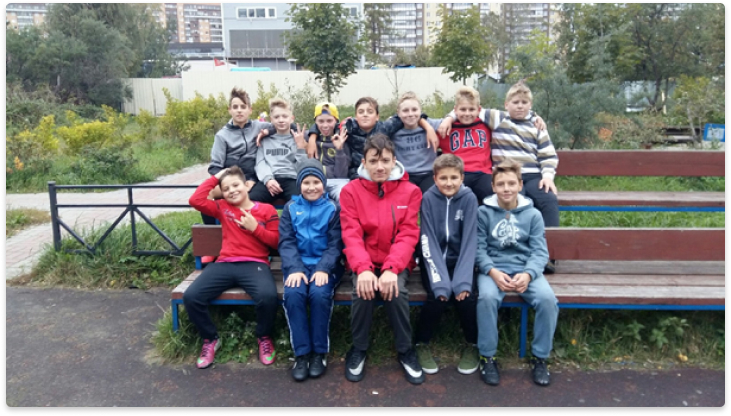

Юпитер
Школьный футбольный клуб
Школьный футбольный клуб
Команда "ЮПИТЕР" была образована в сентябре 2017/18 учебного года. Тогда это была секция для занятий подвижными видами спорта. В основном ребят интересовал флорбол и футбол.
Вскоре "безымянной секции" потребовалось название. Было выдвинуто два варианта названия: Сириус и Юпитер. Ребята остановились на втором. "Изюменкой" в полном названии команды стала буква "Ш". Так образовался Школьный Футбольный Клуб "Юпитер".
Секцию возглавлял учитель физической культуры МОУ "Ново-Девяткинская СОШ №1" Давыденко Вячеслав Васильевич. После 5 месяцев упорных тренировок команда неплохо для первого раза выступила на соревнованиях по флорболу среди школьных команд. Призовых мест она не заняла, но это был бесценный опыт. Впоследствии ребят больше стал интересовать футбол, нежели флорбол, поэтому тренировки проводились по этому виду спорта. Тогда-то и образовался костяк команды.
В мае 2018 года к команде в качестве помощника присоединился Исаков Эрик, однако уже в июне стал по сути ее главным тренером. В качестве основной философии команды стала ставка на свои силы и полное доверие начинающим футболистам. Команда пополнилась несколькими игроками третьих и четвертых классов. Под руководством Эрика Исакова команда сыграла 70, из которых 49 выиграла, семь раз сыграла в ничью. Команда также участвовала в семи крупных выездных турнира, в шести из которых становилась призерами. На данный момент команда располагает 16 хороших футболистов.